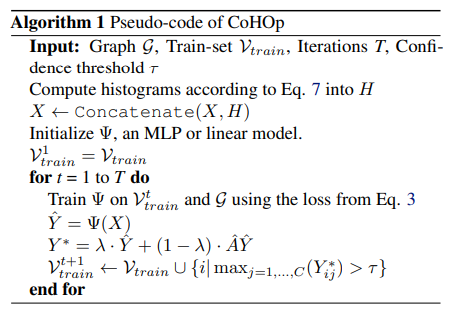
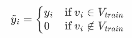
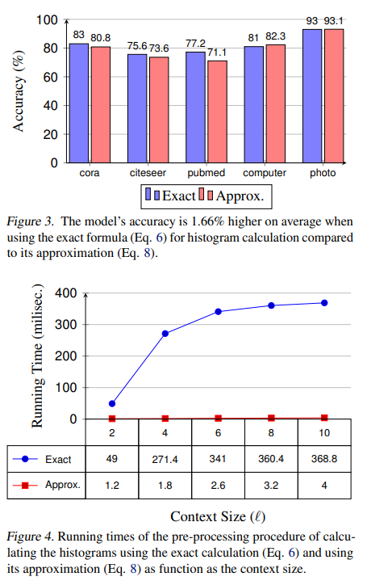

Classifying Nodes in Graphs without GNNs
图神经网络（GNN）是对图中节点进行分类的主要范例，但它们具有一些源于其消息传递架构的不良属性。最近，蒸馏方法成功地消除了测试时 GNN 的使用，但在训练期间仍然需要它们。作者提出了一种完全无 GNN 的节点分类方法，在训练或测试时不需要它们。该方法由三个关键部分组成：平滑约束、伪标签迭代和邻域标签直方图。
PS：我觉得“无GNN”的说法并不准确，它只是没有把图结构和NN结合起来，而不是不用上任何图结构来进行学习。
动机
蒸馏方法最近挑战了节点分类中的现有范式。 GNN 的标准做法是在图中所有标记节点上训练模型，并在测试时使用相同的模型进行节点分类。蒸馏方法消除了在测试时使用 GNN 的需要，尽管它们仍然需要训练 GNN。他们使用 GNN 来伪标记无监督节点。随后，训练 MLP 仅根据其节点特征来预测这些节点的标签，而不考虑其邻居的特征。值得注意的是，在多个数据集上，蒸馏方法与 GNN 具有竞争力。这个结果令人困惑，因为图结构在训练期间似乎有益，但在测试期间却没有。这就引出了一个问题：为什么蒸馏方法如此成功？
作者指出：应对数据集不在于提高模型表达能力，而在于降低模型样本复杂性。 GNN 通过有用的归纳偏差克服了这一挑战，而蒸馏则通过使用 GNN 伪标签增加训练集的大小来克服这一挑战。
模型
CoHOp - Consistency and Histogram Optimization

该模型的损失分为两部分。
一部分为分类的交叉熵损失：
$$
L_{GT}(\Psi)=\sum_{(x_i,y_i)\in V_{train}}CE(\Psi(x_i),y_i)
$$
一部分为：
$$
L_{consist}(\Psi)=\sum_{v_i\in V}\left(\frac{1}{|N(v_i)|}\sum_{v_j\in N(v_i)}CE(\Psi(x_i),\Psi(x_j))\right)
$$
最终：
$$
L(\Psi) = L_{GT}(\Psi) + \gamma \cdot L_{consist}(\Psi)
$$
伪标签迭代
在每次迭代之前，我们将模型以高置信度进行预测的节点以及现有的地面实况训练节点添加到训练集中。我们将模型预测作为这些非真实节点的标签，并将它们称为伪标签。
$$
V_{train}^{I+1} = V_{train} \cup {v_i | \max_{j=1,…,C}(\Psi^I(x_i))_j > \tau }
$$
另外还加了一个伪标签平滑：
$$
Y^{*}=\lambda\cdot\hat{Y}+(1-\lambda)\cdot\hat{A}\hat{Y}
$$
其实就是标签传播
直方图
$$
h_i’ = \sum_{v_j \in N^\ell(v_i) \cap V_{train}} (\alpha^{d(v_i, v_j)} \cdot y_j)
$$
$N^\ell$指为$\ell$距离以内的。
$y_j\in {0,1}^C$为onthot的向量
最后会做一个归一化：
$$
h_i = \frac{h_i’}{\sum_{j=1}^C h_{ij}‘}
$$
对于较大的数据集，例如 ogbn-products，这种计算变得很麻烦。为了解决这个问题，提出了 h 的有效近似。通过使用卷积运算扩展标签来联合计算图中所有节点的直方图。具体来说，矩阵 H 的行表示每个节点的非标准化直方图，通过以下方式获得：
$$
H’=\sum_{k=1}^\ell\left(\alpha\hat{A}\right)^k\tilde{Y}
$$
$\tilde{Y}$的第i行 为：

精确算和近似算的比较
